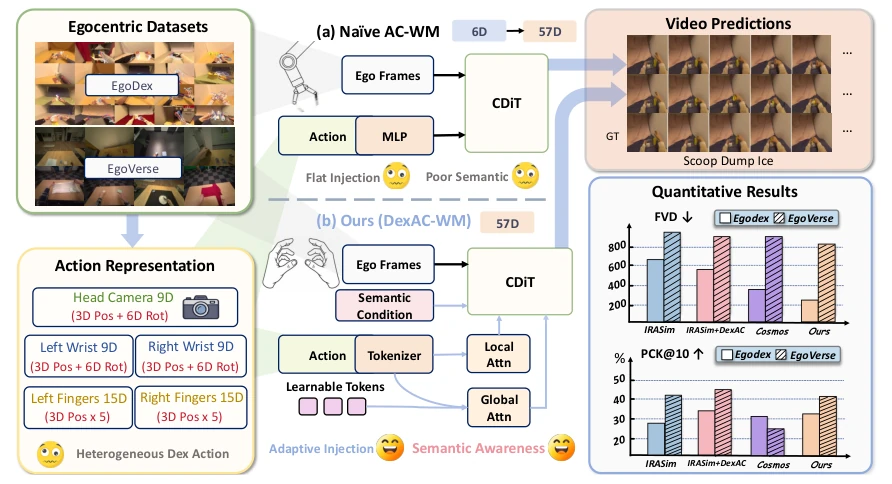
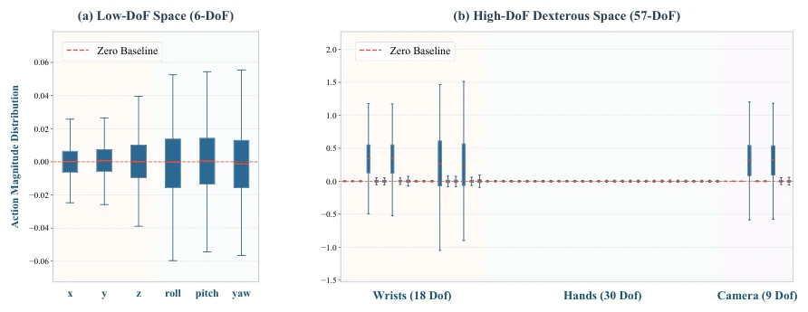
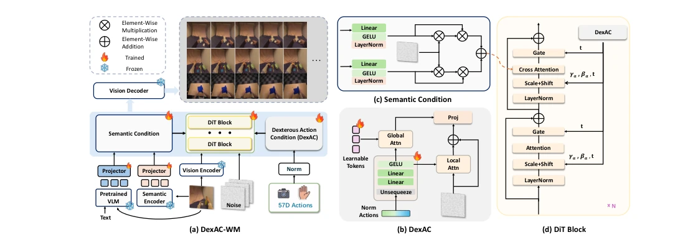
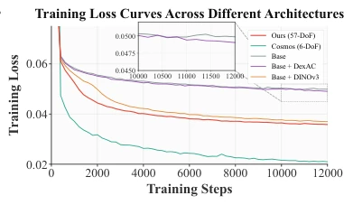
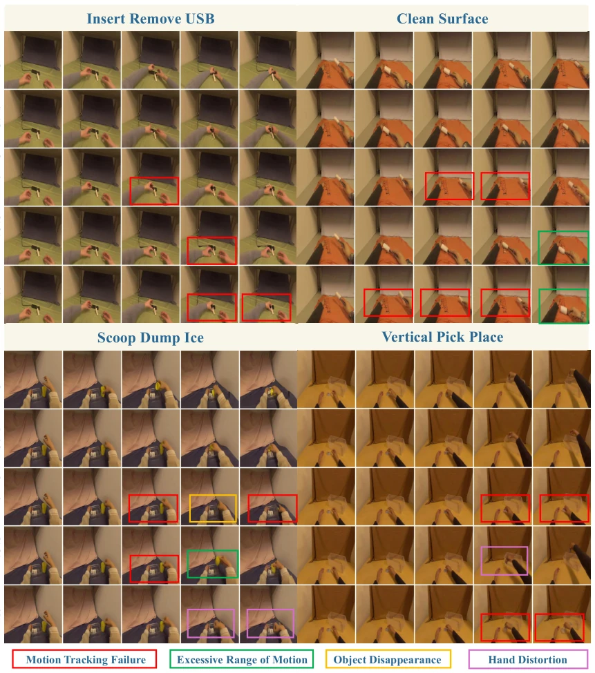
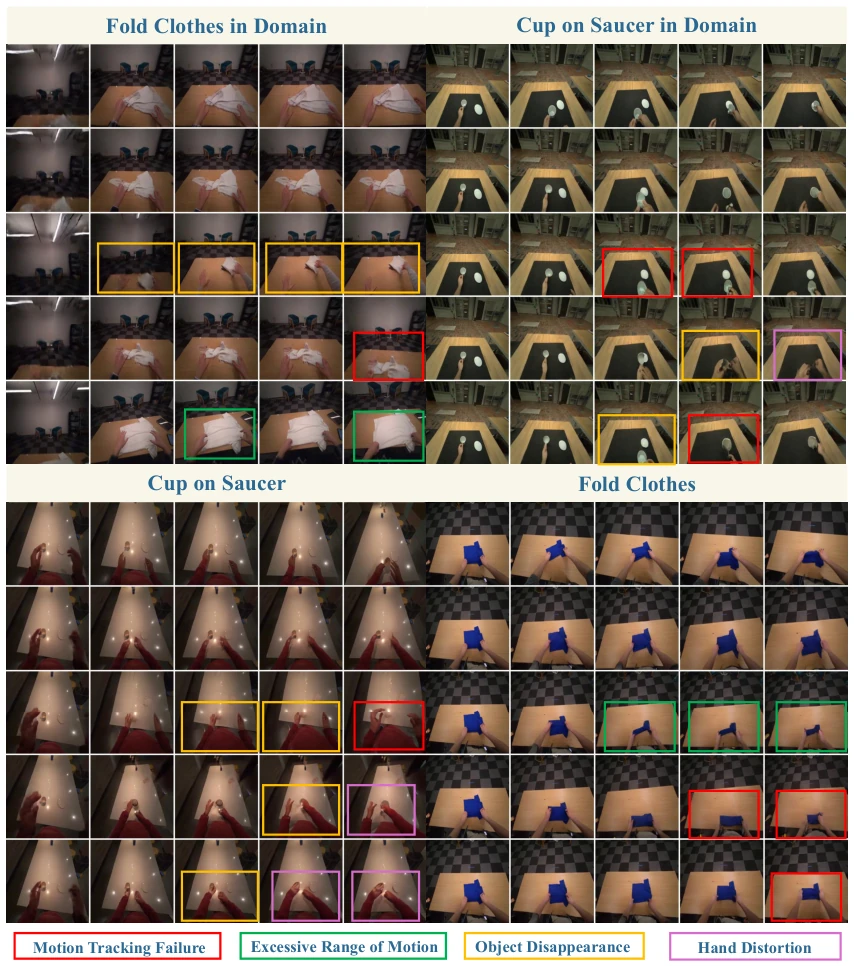
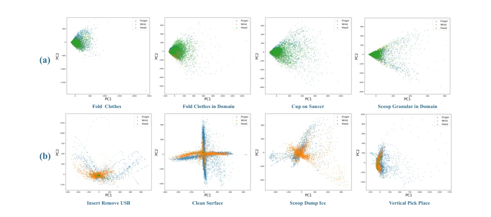
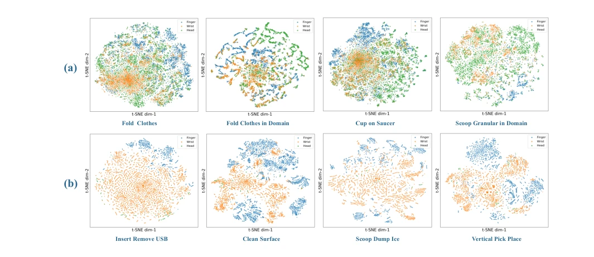
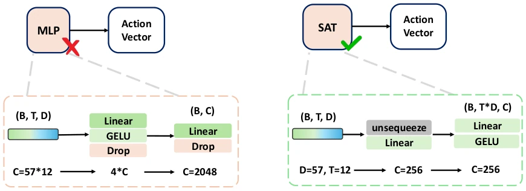

Finally, someone dares to loudly say "The Emperor's New Clothes" about this paper. Existing world models perform exceptionally well on low-degree-of-freedom tasks, but reveal their limitations once facing high-degree-of-freedom dexterous hand manipulation. The authors keenly point out that encoding fingertip micro-movements and wrist large swings together is like putting an ant and a giraffe into the same backpack to run; the optimizer cannot distinguish who is who at all. DexAC-WM implements structured tokens and a dual approach of local and global, indeed enabling the model to learn to "listen to whispers". However, do not celebrate too early; essentially, this is still just providing a more refined input interface for the large model, physical consistency is still achieved by stacking data, and a true end-to-end physics engine still needs to wait. Furthermore, although claiming strong scalability, the fact that it relies on a pre-trained backbone means it has not truly solved the lack of underlying physical modeling, representing more engineering tuning, and its generalization ability for complex physical interactions still requires observation.
Existing action-conditioned world models (AC-WM) perform well on navigation or low-degree-of-freedom manipulation (e.g., [4], [5]), but break down when facing dexterous hand manipulation. The core issue lies in the heterogeneity of high-degree-of-freedom actions (57-DoF): wrist/camera motion amplitude is large (10^0), while finger micro-movement amplitude is extremely small (10^-5). Existing methods such as Cosmos [56] or IRASim [31] typically compress action sequences into a single vector, causing large-scale motion gradients to dominate optimization, while subtle finger signals are drowned out. This is similar to DexWM mentioned in [11], which, although focusing on the hand, still faces scale collapse. The authors point out that this global aggregation fails under high degrees of freedom, requiring a rethinking of action conditioning to retain dimension-level semantics; otherwise, the model cannot capture fine interactions. This gradient dominance effect causes the model to easily ignore key hand details during prediction, leading to unstable physical prediction and an inability to generate fine action sequences that conform to real physical laws.

Figure 1. Overview of our DexAC-WM. Two action-conditioning paradigms for generative world models. (a) A common design in existing approaches is to aggregate the action sequence into a compact global representation before injection. While effective in low-DoF settings, such aggregation becomes less expressive in high-DoF dexterous scenarios with heterogeneous action dimensions. (b) Our proposed DexAC-WM preserves dimension- level action semantics through tokenization and combines local refinement with global modulation to better align action signals with semantic dynamics.

Figure 2. Empirical comparison of action magnitude distributions. (a) Low-DoF action space (6-DoF). The translation and rotation dimensions maintain bounded variances spanning the 10−2 scale, effectively preventing gradient domination. (b) High-DoF dexterous action space (57-DoF). The severe 105 scale gap between macro-movements (wrist/camera) and micro-movements (fingers) creates critical optimization bottlenecks. Note that the finger articulations (30 DoF) appear almost flat due to their 10−5 scale compared to the 100 macro-movements.
The overall architecture is based on the Cosmos-Predict2.5 [56] backbone. The core innovation is the DexAC module. First, the Structured Action Tokenizer (SAT) does not flatten actions but independently normalizes each action dimension and projects it as a Token, retaining temporal evolution. Second, Unified Local-Global Conditioning: the Local branch uses Cross-Attention to allow latent noise to directly query action Tokens, capturing subtle motions; the Global branch uses Learnable Query to aggregate global intent and modulates features through AdaLN. Finally, Semantic Condition introduces DINOv3 [28] visual features and VLM text, injected via Dual Cross-Attention, enhancing scene geometry understanding. Action signals are injected into the AdaLN of each DiT Block. This design avoids early averaging, retains dimension-level structure, while supplementing scene priors through the semantic branch, enabling the model to handle fine control and global consistency simultaneously, solving the optimization bottleneck caused by high-degree-of-freedom action scale imbalance.

Figure 4. Diagram of DexAC-WM architecture. DexAC is designed to explicitly capture both precise local dexterity and globally coherent motion in high-DoF action regimes, while the semantic condition provides rich scene- and object-based representations for semantic understanding. (b) presents the structure of DexAC to preserve dimension-wise structured actions with local and global attention refinement for adaptive action injection. (c) introduces two vanilla cross-attention to combine DINOv3 features with VLM language embed- dings for final addition. (d) presents DiT backbone architecture with 28 blocks in total, and structured action representations from DexAC are injected into each block through Adaptive Layer Normalization (AdaLN).
Tested on EgoDex and EgoVerse. Comparison baselines include Wan-Control [58], IRASim [31], and Cosmos [56]. Metrics include FID, FVD, and PCK. Results show DexAC significantly lowers FVD (EgoDex from 352 to 284) and improves PCK. Ablation experiments prove that Local and Global branches are indispensable; removing Global causes the largest loss. Heatmaps show DexAC activation is more balanced, avoiding single-channel dominance. The semantic branch further stabilizes training. On EgoVerse, PCK@10 improves by 65%, indicating a significant enhancement in action following capability. Ablation also verifies the importance of normalization; simple scaling is inferior to dimension normalization. Visualization results also show the model performs better on occlusion and deformed object tasks, reducing hand deformation and object disappearance phenomena.

Figure 3. Training loss comparison. While the vanilla global conditioning struggles to converge in the high-DoF (57-DoF) space compared to the 6-DoF baseline, our proposed DexAC with seman- tic condition effectively stabilizes training and achieves a significantly lower loss.

Figure 5. Qualitative comparison of action-conditioned video prediction on Egodex [50]. From top to bottom, the rows show the frame sequences of the Ground Truth (GT), our proposed method (Ours), Cosmos w/ DexAC (+DexAC), Cosmos w/ DINOv3 (+DINOv3), and Base (Cosmos).

Figure 6. Qualitative comparison of action-conditioned video prediction on EgoVerse [52]. From top to bottom, the rows show the frame sequences of the Ground Truth (GT), our proposed method (Ours), Cosmos w/ DexAC (+DexAC), Cosmos w/ DINOv3 (+DINOv3), and Base (Cosmos).

Figure 8. The PCA results of (a) EgoVerse and (b) EgoDex tasks.

Figure 9. The t-SNE results of (a) EgoVerse and (b) EgoDex tasks.
其他图片Other Figures

Figure 10. Details comparison of the vanilla MLP action embedding method and our proposed structured action tokenizer (SAT) for action dimension-level feature preservation.